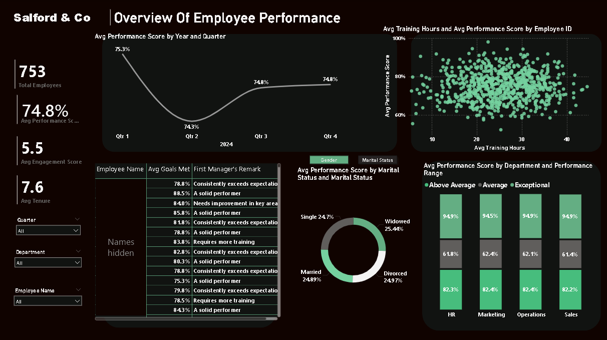

Business context
Every quarter HR was asked the same questions: how is performance trending, which teams need attention, is training paying off? Each answer meant a new spreadsheet cut. The aim was one report that answers them on demand and refreshes with new appraisal data.
Data model
Appraisal records for 753 employees across 2024, holding performance score, goals met, engagement score, tenure, training hours, department, job role, gender, marital status and a manager's remark.
- HR Performance AppraisalThe fact table: one row per appraisal.
- Calendar DimA date table related to the appraisal date. Time intelligence functions such as
PREVIOUSQUARTERdepend on it. - Key MeasuresAn empty table used as a folder, so all measures sit in one place.
- QuarterOverQuarter MeasuresA second folder for the comparison and colour logic.
DAX measures explained
Headline measures
Total Employees
Total Employees = DISTINCTCOUNT('HR Performance Appraisal'[Employee ID])Counts distinct IDs rather than rows, so an employee appraised more than once is still counted once.
Averages
Avg Performance Score = AVERAGE('HR Performance Appraisal'[Performance Score])
Avg Engagement Score = AVERAGE('HR Performance Appraisal'[Engagement Score])
Avg Tenure = AVERAGE('HR Performance Appraisal'[Tenure (Years)])
Avg Goals Met = AVERAGE('HR Performance Appraisal'[Goals Met])
Avg Training Hours = AVERAGE('HR Performance Appraisal'[Training Hours Completed])
Total Training Hours = SUM('HR Performance Appraisal'[Training Hours Completed])Simple aggregations, defined once so every visual and slicer uses the same logic.
Time intelligence
Previous Quarter Performance
Previous Quarter Performance =
CALCULATE(
AVERAGE('HR Performance Appraisal'[Performance Score]),
PREVIOUSQUARTER('Calendar Dim'[Date])
)PREVIOUSQUARTER shifts the date filter back one quarter, so on the Q3 point of a chart this returns Q2's average.
Quarter-on-Quarter Change (rewritten)
QuarterOverQuarter Performance Change(%) =
VAR LatestDay = LASTNONBLANK('Calendar Dim'[Date], [Avg Performance Score])
VAR CurrentQ = CALCULATE([Avg Performance Score], DATESQTD(LatestDay))
VAR PreviousQ = CALCULATE([Avg Performance Score], PREVIOUSQUARTER(LatestDay))
VAR PctChange = DIVIDE(CurrentQ - PreviousQ, PreviousQ)
VAR Icon = SWITCH(TRUE(), PctChange > 0, "▲ ", PctChange < 0, "▼ ", "↔ ")
RETURN
IF(ISBLANK(PctChange), BLANK(), Icon & FORMAT(PctChange, "0.0%"))The original measure divided by the previous quarter with /. On the headline card there is no single "current quarter", so the previous-quarter value was blank and the card showed #INF. The rewrite finds the latest date with data, compares that quarter with the one before it, and uses DIVIDE so a missing value returns blank instead of an error. The card now reads ▲ 0.1%.
Presentation logic
Performance Color Code
Performance Color Code =
VAR PerformanceDifference = [Avg Performance Score] - [Previous Quarter Performance]
RETURN
SWITCH(TRUE(),
PerformanceDifference > 0, "#6AA84F", -- green: improving
PerformanceDifference < 0, "#E06666", -- red: declining
"#F4F3F3") -- grey: no changeReturns a colour code that drives conditional formatting, so the direction of change is visible without reading the number.
Dynamic Overview Title
Dynamic Overview Title =
VAR SelectedEmployee = SELECTEDVALUE('HR Performance Appraisal'[Employee Name])
VAR SelectedDepartment = SELECTEDVALUE('HR Performance Appraisal'[Department])
RETURN
IF(NOT ISBLANK(SelectedEmployee), SelectedEmployee & "'s Performance Record",
IF(NOT ISBLANK(SelectedDepartment), "Performance Overview for " & SelectedDepartment,
"Overview Of Employee Performance"))SELECTEDVALUE returns a value only when exactly one is selected in the slicers, so the page title changes to match the view: company, department or individual. An earlier version added "Mr" or "Ms" based on gender. It was removed because a report title has no need for it.
Removed: Training Time Breakdown
This measure converted total training hours into a "days, hours, minutes" string. It was shown on an unlabelled card reading "3152DD,4HH,0MM", which no reader could interpret. The card was deleted. Training is covered by Avg Training Hours on the scatter chart.
How the report is used
This report has no what-if slider. Its interactive controls are three slicers: quarter, department and employee. They filter every visual and the dynamic title, so a manager can move from company to department to one person without a new report being built.
- QuarterCompares any quarter with the trend line and the quarter-on-quarter card.
- DepartmentIsolates one team, and the title updates to name it.
- EmployeeShows one person's record for appraisal conversations.
Dashboard and findings

| Quarter 2024 | Avg performance | Change |
|---|---|---|
| Q1 | 75.3% | – |
| Q2 | 74.3% | ▼ 1.0 pt |
| Q3 | 74.8% | ▲ 0.5 pt |
| Q4 | 74.8% | ▲ 0.1 pt |
Performance bands look almost identical in HR, Marketing, Operations and Sales, so the differences that matter sit with individuals, not teams.
- Within each department, the average scores of the above-average, average and exceptional bands differ by one point or less between teams.
- The scatter of training hours against performance shows no visible pattern: employees with 10 hours and 40 hours of training score across the same range.
- Marital status groups are close to even in size and add little to the performance story. That visual could be replaced with goals met by role.
Limitations and responsible use
- No statistical test. The training finding is read from the scatter chart. A correlation coefficient would confirm it.
- One year of data. Four quarters are too few to call a trend. The Q2 dip may be seasonal.
- Personal data. The report shows named employees with manager remarks. In live use, row-level security should limit each manager to their own team, and demographic visuals such as marital status should be justified before they are shown.
- Case-study data. Figures describe a fictional company and are not results from an employer.
Recommendations
- Target development at individuals and managers, using the employee slicer and manager remarks, since department averages are too similar to prioritise one team.
- Review training content, not volume. More hours are not linked to higher scores, so assess which programmes change performance.
- Investigate the Q2 dip with managers before assuming it is seasonal, and watch whether it recurs in 2025.
- Add row-level security before the report is shared beyond HR.
- Refresh quarterly from the appraisal system so the report replaces the manual pack for good.
How to reproduce it
Download the Power BI file (Salford_Performance_Appraisal.pbix). It opens in Power BI Desktop with the data model and every measure described here.
- Load the appraisal data and create a calendar table. Mark it as a date table and relate it to the appraisal date.
- Create measure folder tables and the measures in section 03.
- Apply the colour code measure through conditional formatting on the change card.
- Add the three slicers and bind the page title to the dynamic title measure.